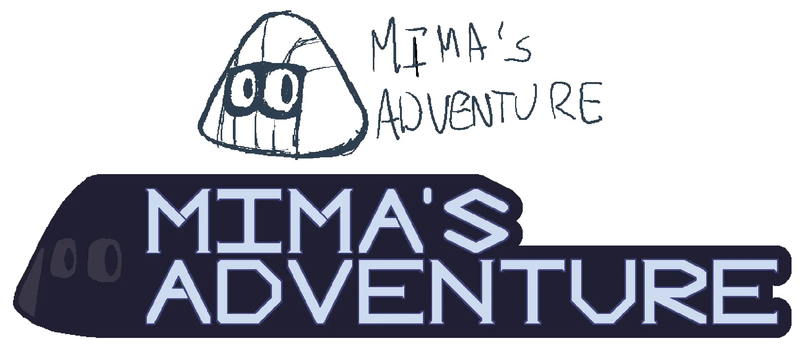
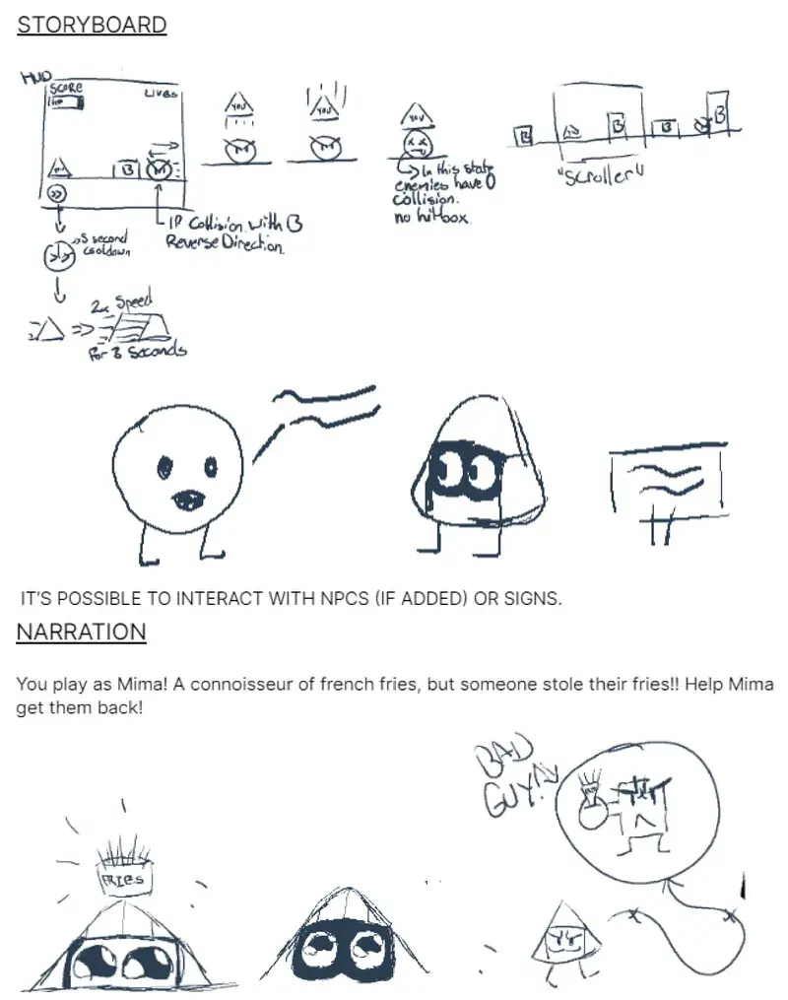
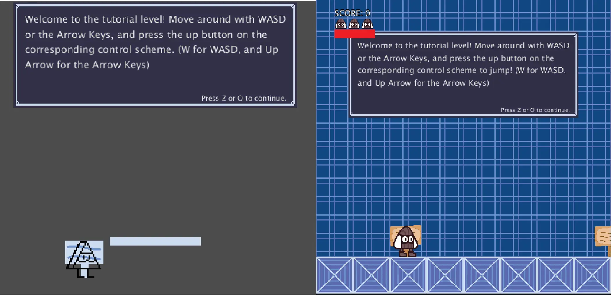
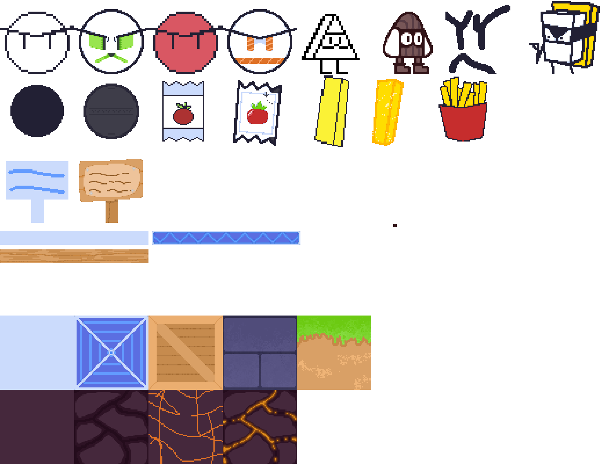

Mima's Adventure
ROLES
Game Developer, Game Designer
Takeaways
- Experienced the development pipeline for game development (Ideating, Prototyping, Testing, Asset Creation).
- Learned to carefully and rigorously debug a game.
- Developed skills in asset creation and integration.
Project Overview
Mima's Adventure is a short 2D side-scroller. You play as Mima, a riceball who had their fries stolen!
You can play the game here: Mima's Adventure (Make sure to have Processing and the ControlP5 Library installed!)
Context
Genre: Action, Platformer
Team Size: 1
Platform: PC (Windows Only)
Development Time: March - April 2021
Tools Used: Processing (Game Engine), Aseprite (Artwork), FL Studio (Music, Sound Effects)
Mima's Adventure was the first game I ever made, it was a solo academic project I completed at SFU within four weeks. I created the game in Processing, the art in Clip Studio Paint and Aseprite, and the music and sound effects in FL Studio.


Objective
Mima's Adventure was meant to demonstrate what we've learned about Processing over during the course. With only four weeks to make the game, I thought that a 2D side-scroller with a simple plot would be the most feasible, as I could put allocate most of my time into working on the gameplay.
The abilities I wanted players to have on-top of the standard run and jump, was a dash ability, a double jump, and the ability to interact with objects like signs or NPCs.
Development
After my initial proposal was approved, I set out to work on the game's foundations. This included the basic movement, enemy AI and things such as platforms. To ensure I didn't spend too much on aesthetics, I went with placeholder sprites that were meant to be replaced at a later date. This would allow me to quickly test and ideate other possible mechanics, and scrap them or planned ones in case it doesn't work out, all while preventing my the heartbreak compared to if I had already made the art for it.
A bug turned mechanic I implemented was the mechanic on where if you stepped on multiple enemies at the same time, it would actually send you flying. Looking back, I believe the reason why this happened was due to the enemy classes handling how much momentum Mima gains when they step on them, and so when stepping on multiple, that momentum gain would stack and send Mima flying. I honestly saw this as something fun to play with, and so I kept it and made a section in one of the four levels take advantage of this mechanic. Having multiple enemies in a section with a sign nearby to inform players about it.


Issues & Solutions
Given that it was my first time making game, I ended up taking up more time than I expected focusing coding, bug fixing before I could get to both the art and music. So I had to compromise, I made new art assets for the game, but I had to use older tracks that I composed or covered in my personal time for the soundtrack.




Conclusion
Despite the time constraint I found myself in, Mima's Adventure was a very rewarding experience, and set me on the path to become a game designer. It also showed me how important it was to prioritize and manage my time, with coding being the most important aspect of develpoment, and art and music being secondary. My efforts in this project resulted in the TA recommending me to send the project to my professor in case there was a SFU showcase that year.
I am currently remaking this game and hope to release it sometime soon, with more levels, more music, and hopefully better aesthetics.